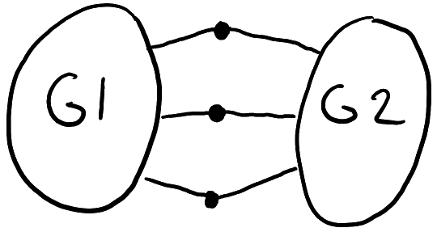

Formal definition of a Graph: A graph G is a set of vertices V(G) and a set of edges E(G), which are pairs of vertices.
Definition: A graph G is connected if, for every two vertices u and v in V(G), there exists a path from u to v in G.
An equivalent notion to connected: There does not exist a proper, nonempty set X of V(G) such that the cut induced by X is empty
Rough idea behind this proof:
~ is an equivalence relation if and only if:
The second part is trivial once we prove that x ~ y = "if there is a path from x to y in G" is an equivalence relation. The equivalence classes under this relation are called the components of G.
Definition: A graph G is k-connected if there does not exist a subset X of V(G) with |X| at most k - 1, such that G - X is disconnected.
For instance, if you take the middle 3 vertices here as X, it will make G1 disconnected from G2.
Alternate Notion: A graph G is k-connected if, for every two vertices u, v in V(G), there exist k vertex-disjoint paths from u to v in G.
The easy direction: Suppose X is a subset of V(G) with |X| less than k - 1, such that G - X is disconnected. Let C1 and C2 be two compoents of G - X. Then let u ∈ C1, v ∈ C2 be vertices. We claim that there does not exist a set P of k vertex-disconnected paths from u to v. To see this, note that every path Pi ∈ P must contain a vertex. Since the paths are disjoint, this implies that |P| ≤ |X| ≤ k - 1. This proves our claim, hence, G is not connected according to our alternate definition.
What about the other version? We'd have to state that if there are not k vertex-disjoint paths from u to v, then there is a cut X separating u and v of size at most k - 1.
In alternate terms, ∀ u, v ∈ V(G), the size of a minimum cut separating u and v ≥ the max number of vertex-disjoint paths from u to v.